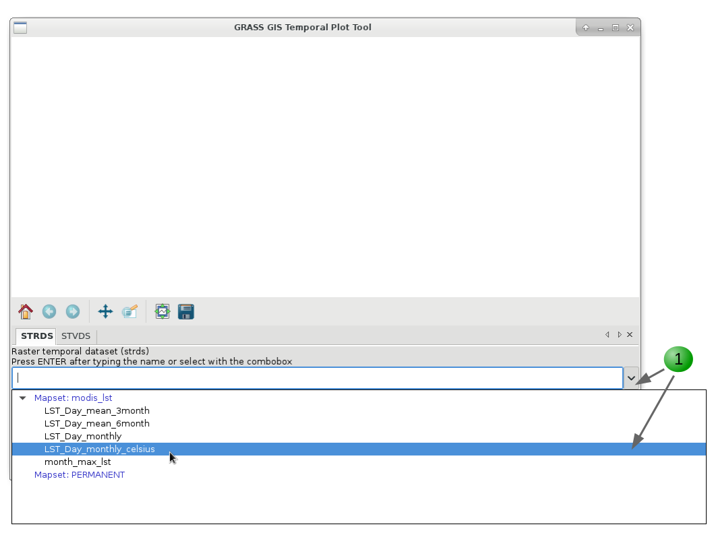
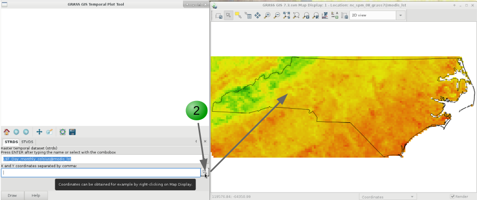
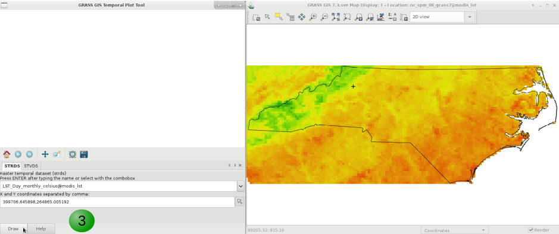
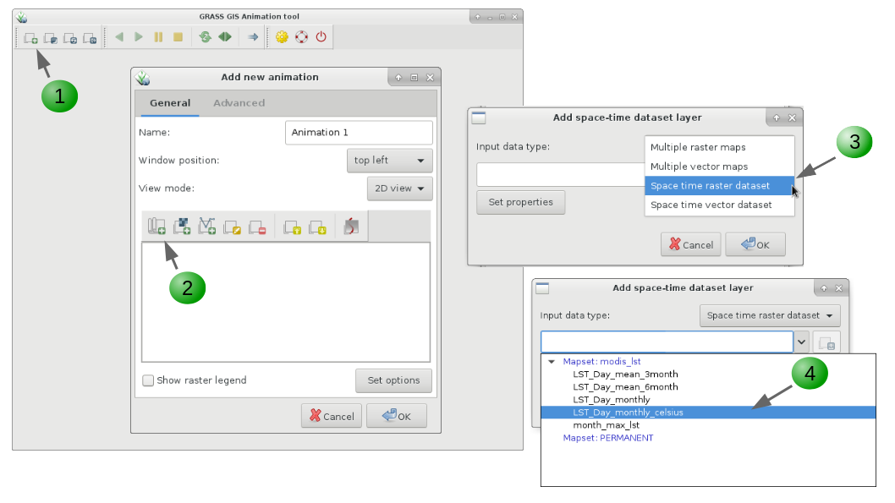
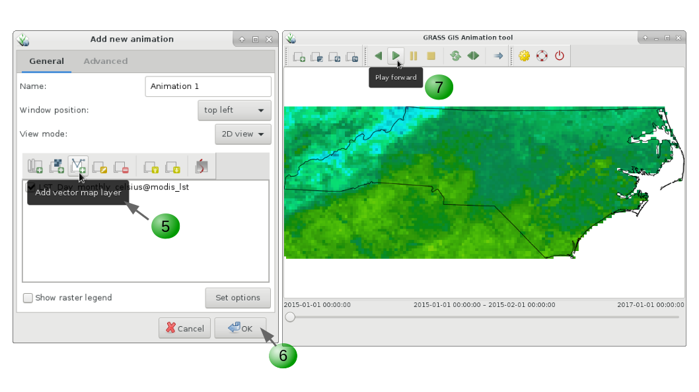
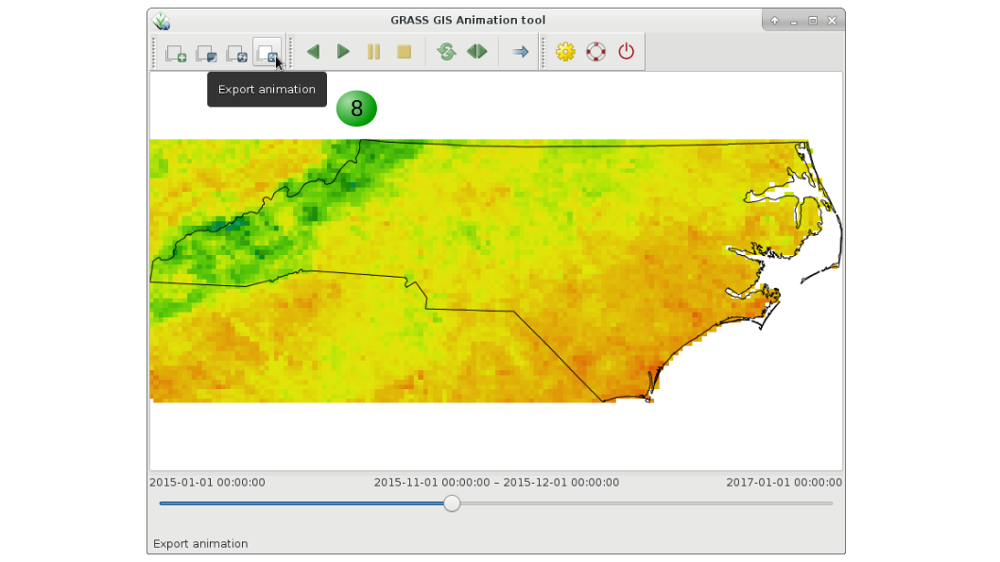
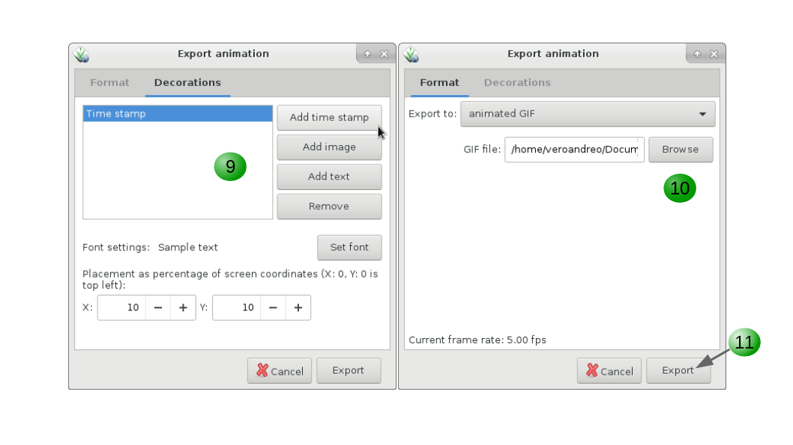

Raster time series in GRASS GIS: MODIS Land Surface Temperature
Basic concepts and workflow overview
GRASS GIS is the first Open Source GIS that incorporated capabilities to manage, analyze, process and visualize spatio-temporal data, as well as the temporal relationships among time series.
Importantly, the temporal GRASS (TGRASS) concept is based on metadata and does not duplicate any datasets. It follows a snapshot approach, i.e. add time stamps to existent maps, to integrate the time dimension to the classical spatial GIS. A collection of time stamped maps (snapshots) of the same variable are called space-time datasets (STDS) in TGRASS. Each map in a STDS might have a different spatial and temporal extent.
TGRASS uses an SQL database to store the temporal and spatial extension of STDS, as well as the topological relationships among maps and among STDS in each mapset.
Space-time datasets
Space-time datasets are called differently according to the map type they are formed of:- Space time raster datasets (STRDS) collections of time stamped raster maps.
- Space time 3D raster datasets (STR3DS) collections of time stamped 3D raster maps.
- Space time vector datasets (STVDS) collections of time stamped vector maps.
Spatio-temporal modules
- t.*: General modules to handle STDS of all types
- t.rast.*: Modules that specifically deal with STRDS
- t.rast3d.*: Modules that specifically deal with STR3DS
- t.vect.*: Modules that specifically deal with STVDS
Workflow overview
Now, how do we work with time series in GRASS GIS?Assuming we already have our maps in the GRASSDBASE (i.e., grassdata/location/mapset), the first step is to set the connection to the temporal database. This is something we need to do only once per mapset. After that, we create the STDS, i.e. the container tables for the time series, and finally we assign time stamps to maps and register them in the STDS. After these basic and necesary steps, the rest will depend on our specific objectives. Here's a (non-exhaustive) list of different tasks and the corresponding TGRASS modules to achieve them:
- Set and connect the temporal database (mapset specific): t.connect
- Create the STDS (raster, vector or raster 3D): t.create
- Assign time stamps to maps and register them in the STDS: t.register
- Check basic info, integrity and validity of STDS: t.list, t.info, t.topology
- Edit, update, unregister, remove maps and/or STDS: t.rename, t.remove, t.support, t.unregister
- List maps, make selections, get univariate statistics: t.rast.list, t.vect.list, t.select, t.rast.extract, t.vect.extract, t.rast.univar, t.vect.univar
- Spatio-temporal processing:
- data aggregation: t.rast.series, t.rast.aggregate, t.rast.aggregate.ds
- data accumulation: t.rast.accumulate, t.rast.accumulate,
- gap-filling and spatial smoothing: t.rast.gapfill, t.rast.neighbors
- spatio-temporal algebra: t.rast.mapcalc, t.rast.algebra, t.vect.algebra
- Visualization: g.gui.timeline, g.gui.tplot, g.gui.animation, g.gui.mapswipe
Hands-on to raster time series processing
1. Get the data, set the computational region and display a map
Download the modis_lst mapset and unzip it within nc_basic_spm_grass7. If you are in a different mapset, change to modis_lst using g.mapset mapset=modis_lst. Once there (you can check with g.mapset -p), first obtain the list of raster maps available using g.list. Choose one of the LST maps to display either using the GUI or through the d.* commands in the terminal (HINT: remember to check the computational region if nothing is displayed!).
We will now add different map decorations, but first, let's change the color palette from grey to viridis and set the computational region to the state of North Carolina (using boundary_state vector map).
r.colors map=MOD11B3.A2015060.h11v05.single_LST_Day_6km color=viridis
g.region -p vector=boundary_state
# Change color palette from grey to viridis
r.colors map=MOD11B3.A2015060.h11v05.single_LST_Day_6km color=viridis
# Set region to NC (g.region -d)
g.region -p vector=boundary_state
# Optionally, to the full extent of one of the raster maps
g.region -p raster=MOD11B3.A2015060.h11v05.single_LST_Day_6km
# Change color palette from grey to viridis
gmod.Module("r.colors", map="MOD11B3.A2015060.h11v05.single_LST_Day_6km", color="viridis")
# Set region to NC
gmod.Module("g.region", flags="p", vector="boundary_state")
# Optionally, to the full extent of one of the raster maps
gmod.Module("g.region", flags="p", raster="MOD11B3.A2015060.h11v05.single_LST_Day_6km")
Now, to display a raster map and add decorations, we can run the commands from the command line or use the main GUI and copy the corresponding commands for future replication of the workflow. Note the "Copy" button in the GUI of each module. Maybe you might want to get help about the options and flags of the different commands, e.g. d.rast --help
# Open a monitor
d.mon wx0
# Display a raster map
d.rast map=MOD11B3.A2015060.h11v05.single_LST_Day_6km
# Display a vector map
d.vect map=boundary_state type=boundary
# Add raster legend
d.legend -t -s -b raster=MOD11B3.A2015060.h11v05.single_LST_Day_6km \
title=LST title_fontsize=20 font=sans fontsize=18
# Add scale bar
d.barscale length=200 units=kilometers segment=4 fontsize=14
# Add North arrow
d.northarrow style=1b text_color=black
# Add text
d.text -b text="LST Day from MOD11B3.006 - North Carolina - March, 2015" \
color=black bgcolor=229:229:229 align=cc font=sans size=8
MODIS LST map with decorations (scaled Kelvin pixel values)
For simplicity reasons, we do not show in this example how to download, convert, reproject and import the MODIS LST products, but if you are interested in these particular steps you can check r.modis, r.modis.download and r.modis.import. These are two GRASS GIS add-ons that by means of the pymodis python library allow you to download MODIS data from LP DAAC, mosaic tiles, convert from HDF to other formats, reproject and import the data into GRASS GIS. To install these add-ons you just need to run g.extension r.modis. To work with them, make sure you have the pymodis library installed.
2. Create the temporal raster dataset (STRDS)
To create a space-time raster data set (STRDS) implies to create an SQLite table in the temporal database. This table will hold our raster time series and will allow us to easily handle huge amounts of maps by only using the STRDS as input in temporal commands.
If this is the first time you use the temporal framework, you need to create and set the connection to the temporal database by means of t.connect. As the temporal database is mapset specific, you'll need to repeat this step in each mapset in which you'll have STDSs, but it is only needed once per mapset.
For the creation of any STDS we use t.create. We need to specify which type of maps (raster, raster3d or vector) the STDS will contain and which type of time (absolute or relative) the maps represent. Absolute time is that of the Gregorian calendar (e.g., 1981-12-23 23:30:00) and relative time is represented by an integer and a time unit (e.g., 10 seconds, 1 day, 3 months). After creating the container SQLite table, we will check if the STRDS is in the database and obtain information about it.
t.connect -d
t.create type=strds temporaltype=absolute output=LST_Day_monthly title="Monthly LST Day 5.6 km" description="Monthly LST Day 5.6 km MOD11B3.006, 2015-2016"
t.list type=strds
t.info input=LST_Day_monthly
# Create the temporal db connection
t.connect -d
# Create the STRDS
t.create type=strds temporaltype=absolute output=LST_Day_monthly \
title="Monthly LST Day 5.6 km" \
description="Monthly LST Day 5.6 km MOD11B3.006, 2015-2016"
# Check if the STRDS is created
t.list type=strds
# Get info about the STRDS
t.info input=LST_Day_monthly
import grass.temporal as tgis
# Create the temporal db connection using temporal library
gmod.Module("t.connect", flags="d")
# Initialize the temporal library
tgis.init()
# Create the new STRDS
tgis.open_new_stds("LST_Day_monthly", "strds", "absolute", "Monthly LST Day 5.6 km",
"Monthly LST Day 5.6 km MOD11B3.006, 2015-2016", "mean", None, False)
# Connect to the SQL database interface
dbif = tgis.SQLDatabaseInterfaceConnection()
dbif.connect()
# Get and print the list of temporal dataset
stds_list = tgis.get_dataset_list("strds", "absolute", dbif=dbif)
print(stds_list)
# Get and print info about the created strds
dataset = tgis.dataset_factory("strds", "LST_Day_monthly@modis_lst")
dataset.select(dbif)
dataset.print_info()
3. Register maps into the STRDS
The next step is to assign time stamps to maps and add them to the STRDS, i.e. register the maps in the STRDS. To register maps in a STDS, we need to pass the empty STDS as input, the list of maps to be registered, the start date and increment options along with the -i flag for interval creation. There are different ways to register maps in STDS. For more options, you can check the t.register manual and the related map registration wiki page. Note that back ticks won't work under MS Windows. The workaround is to save the map names list in a text file beforehand.
# in Unix systems
t.register -i input=LST_Day_monthly maps=`g.list type=raster pattern=MOD11B3*LST_Day* separator=comma` start="2015-01-01" increment="1 months"
# in MS Windows, first create the list of maps
g.list type=raster pattern=MOD11B3*LST_Day* output=map_list.txt
t.register -i input=LST_Day_monthly file=map_list.txt start="2015-01-01" increment="1 months"
# Register maps in STRDS
t.register -i input=LST_Day_monthly \
maps=`g.list type=raster pattern=MOD11B3*LST_Day* separator=comma` \
start="2015-01-01" increment="1 months"
Let's check again the basic info to see how it looks like and then list the raster maps in our LST_Day_monthly STRDS:
t.info LST_Day_monthly
t.rast.list LST_Day_monthly
# Check info
t.info LST_Day_monthly
# Check the list of maps in the STRDS
t.rast.list LST_Day_monthly
# Get info using the modules
gmod.Module("t.info", input="LST_Day_monthly")
# Get list of raster using the Python library
tgis.list_maps_of_stds("strds", "LST_Day_monthly@modis_lst", "name,mapset,start_time,end_time",
"start_time", "", "|", "cols", True, "no")
4. Temporal data processing and analysis: this is where the fun starts!
Lists and selections
One basic but very important function when handling hundreds or thousands of maps is the listing function, i.e. we usually need to list maps meeting a certain condition. For example, we need maps which start month is June, maps with minimum values lower than 100, and so on. The GRASS GIS Temporal framework has different commands for that task: t.list for listing STDS and maps registered in the temporal database, t.rast.list for maps in raster time series and, t.vect.list for maps in vector time series. All these commands allow us to list STDSs and/or maps according to different criteria. Let's see some examples:
# Maps with minimum value lower than or equal to 14000
t.rast.list input=LST_Day_monthly order=min columns=name,start_time,min where="min <= '14000'"
# Maps with maximum value higher than 14000
t.rast.list input=LST_Day_monthly order=max columns=name,start_time,max where="max > '14000'"
# Maps between two given dates
t.rast.list input=LST_Day_monthly columns=name,start_time where="start_time >= '2015-05' and start_time <= '2015-08-01 00:00:00'"
# Maps from January
t.rast.list input=LST_Day_monthly columns=name,start_time where="strftime('%m', start_time)='01'"
# Maps from June, 1st
t.rast.list input=LST_Day_monthly columns=name,start_time where="strftime('%m-%d', start_time)='06-01'"
From °K*50 to °C using the temporal calculator
MODIS provides LST productus as °K*50. We will re-scale the data to °C and set a proper color palette for the STRDS (HINT: t.rast.colors).
To transform all the maps in our LST_Day_monthly time series into °C we will use the t.rast.mapcalc module. This module allows us to perform spatio-temporal operations with maps in STRDS.
t.rast.mapcalc input=LST_Day_monthly output=LST_Day_monthly_celsius basename=LST_Day_monthly_celsius expression="LST_Day_monthly * 0.02 - 273.15"
# Re-scale data into degrees Celsius
t.rast.mapcalc input=LST_Day_monthly output=LST_Day_monthly_celsius \
basename=LST_Day_monthly_celsius \
expression="LST_Day_monthly * 0.02 - 273.15"
MODIS LST re-scaled to degrees Celsius
Alternatively, we could have used t.rast.algebra to perform the previous transformation. This module allows us to perform a very wide variety of operations in the temporal and spatial domains, as well as much of the more "classical" operations already available in r.mapcalc. The command would look like this:
t.rast.algebra basename=LST_Day_monthly_celsius expression="LST_Day_monthly_celsius = LST_Day_monthly * 0.02 - 273.15"
t.rast.algebra basename=LST_Day_monthly_celsius \
expression="LST_Day_monthly_celsius = LST_Day_monthly * 0.02 - 273.15"
gmod.Module("t.rast.algebra", basename="LST_Day_monthly_celsius",
expression="LST_Day_monthly_celsius = LST_Day_monthly * 0.02 - 273.15")
Basic descriptive statistics of LST time series
To explore a bit more our time series, we will obtain descriptive statistics for the maps in the STRDS by means of t.rast.univar. There's also the possibility to obtain extended statistics such as first quartile, median value, third quartile and percentile 90 by setting the -e flag. Let's see:
t.rast.univar input=LST_Day_monthly_celsius
t.rast.univar -e input=LST_Day_monthly_celsius
t.rast.univar input=LST_Day_monthly_celsius separator=comma output=stats_LST_Day_monthly_celsius.csv
# Print univariate stats for maps within STRDS
t.rast.univar input=LST_Day_monthly_celsius
# Get extended statistics
t.rast.univar -e input=LST_Day_monthly_celsius
# Write the univariate stats output to a csv file
t.rast.univar input=LST_Day_monthly_celsius separator=comma output=stats_LST_Day_monthly_celsius.csv
# Print univarite statistics with the Python library
tgis.print_gridded_dataset_univar_statistics("strds", "LST_Day_monthly_celsius@modis_lst", None, None, False, False, ",", False)
# Print extended univarite statistics with the Python library
tgis.print_gridded_dataset_univar_statistics("strds", "LST_Day_monthly_celsius@modis_lst", None, None, True, False, ",", False)
Which was the maximum LST in the past two years?
There are basically two dedicated modules to perform temporal aggregations in GRASS GIS. The first one that we will use is t.rast.series. This module is a wrapper for r.series and allows us to aggregate our STRDS or parts of it with different methods. We will use it now to obtain the absolute maximum LST in the past two years.
t.rast.series input=LST_Day_monthly_celsius output=LST_Day_max method=maximum
r.colors map=LST_Day_max color=celsius
d.mon wx0
d.rast LST_Day_max
d.vect map=boundary_state type=boundary
d.legend -t -s -b raster=LST_Day_max title=LST title_fontsize=20 font=sans fontsize=18
d.barscale length=200 units=kilometers segment=4 fontsize=14
d.northarrow style=1b text_color=black
d.text -b text="Maximum LST in the period 2015-2016 - North Carolina" color=black bgcolor=229:229:229 align=cc font=sans size=8
# Get maximum LST in the STRDS
t.rast.series input=LST_Day_monthly_celsius \
output=LST_Day_max method=maximum
# Change color pallete to celsius
r.colors map=LST_Day_max color=celsius
# Display the new map
d.mon wx0
d.rast LST_Day_max
d.vect map=boundary_state type=boundary
d.legend -t -s -b raster=LST_Day_max \
title=LST title_fontsize=20 font=sans fontsize=18
d.barscale length=200 units=kilometers segment=4 fontsize=14
d.northarrow style=1b text_color=black
d.text -b text="Maximum LST in the period 2015-2016 - North Carolina" \
color=black bgcolor=229:229:229 align=cc font=sans size=8
# Get maximum LST in the STRDS
gmod.Module("t.rast.series", input="LST_Day_monthly_celsius",
output="LST_Day_max", method="maximum")
# Change color pallete to celsius
gmod.Module("r.colors", map="LST_Day_max", color="celsius")
Maximum LST in the period 2015-2016 in North Carolina
Which is the month of the maximum LST?
Now, by means of the spatio-temporal map calculator, we will get the month in which the absolute maximum LST occurred. For that, we will first compare our LST_Day_monthly_celsius STRDS with the map of absolute maximum LST LST_Day_max that we just obtained before. If they coincide, we keep the month for that pixel, otherwise it will be NULL. Then, we aggregate the resulting month_max_lst STRDS with t.rast.series method=maximum and we get the map with the pixelwise month in which the absolute maximum LST has occurred in the past two years. Finally, we remove the intermediate STRDS, since we are only interested in the aggregated map.
t.rast.mapcalc -n inputs=LST_Day_monthly_celsius output=month_max_lst expression="if(LST_Day_monthly_celsius == LST_Day_max, start_month(), null())" basename=month_max_lst
t.rast.series input=month_max_lst method=maximum output=max_lst_date
t.remove -rf inputs=month_max_lst
# New strds with month of overall maximum
t.rast.mapcalc -n inputs=LST_Day_monthly_celsius output=month_max_lst \
expression="if(LST_Day_monthly_celsius == LST_Day_max, start_month(), null())" \
basename=month_max_lst
# Get basic info
t.info month_max_lst
# Map with month of overall maximum
t.rast.series input=month_max_lst method=maximum output=max_lst_date
# Remove month_max_lst strds (we were only interested in the resulting aggregated map)
t.remove -rf inputs=month_max_lst
# New strds with month of overall maximum
gmod.Module("t.rast.mapcalc", flags="n", inputs="LST_Day_monthly_celsius", output="month_max_lst",
expression="if(LST_Day_monthly_celsius == LST_Day_max, start_month(), null())",
basename="month_max_lst")
# Map with month of overall maximum
gmod.Module("t.rast.series", input="month_max_lst", method="maximum", output="max_lst_date")
# Remove month_max_lst strds
gmod.Module("t.remove", flags="rf", inputs="month_max_lst")
Note that the flags "-rf" force (immediate) removal of both the STRDS (i.e.: the container table) and the maps registered in it.
Finally, we display the resulting map:
d.mon wx0
d.rast max_lst_date
d.vect map=boundary_state type=boundary
d.legend -t -s -b raster=max_lst_date title=LST title_fontsize=20 font=sans fontsize=18
d.barscale length=200 units=kilometers segment=4 fontsize=14
d.northarrow style=1b text_color=black
d.text -b text="Month of maximum LST 2015-2016" color=black bgcolor=229:229:229 align=cc font=sans size=8
Month of maximum LST for the period 2015-2016
From monthly to seasonal LST
The other module that allows us to perform temporal aggregations is t.rast.aggregate. With this module we are able to aggregate raster maps in our STRDS with different granularities. Note that this module also has the option where that allows us to set specific dates for the aggregation. We will use this module to get 3-month average LST. You should remember how to get general info of the newly created STRDS and the list of maps in it with start and end times. What have changed?
t.rast.aggregate input=LST_Day_monthly_celsius output=LST_Day_mean_3month basename=LST_Day_mean_3month suffix=gran method=average granularity="3 months"
# 3-month mean LST
t.rast.aggregate input=LST_Day_monthly_celsius \
output=LST_Day_mean_3month \
basename=LST_Day_mean_3month suffix=gran \
method=average granularity="3 months"
# 3-month mean LST
gmod.Module("t.rast.aggregate", input="LST_Day_monthly_celsius", output="LST_Day_mean_3month",
basename="LST_Day_mean_3month", suffix="gran", method="average", granularity="3 months")
Extract LST time series data for different areas in a vector map
A very common task is to extract raster data to vector points (check t.rast.what). However, we may also be interested in getting spatially aggregated time series data for polygons. There's a GRASS GIS add-on for this: v.strds.stats. It calculates zonal statistics of each raster in a STRDS and writes the output to the attribute table of a new polygon vector map.
We first install the add-on by means of g.extension. Then, we extract the average, minimum and maximum monthly LST for the different geologic types in North Carolina and save it to a text file.
g.extension v.strds.stats
v.strds.stats input=geology strds=LST_Day_monthly_celsius output=geology_aggr_lst method=average,minimum,maximum
v.db.select map=geology_aggr_lst file=ts_polygons.csv
# Install v.strds.stats add-on
g.extension v.strds.stats
# Extract mean, max and min LST for municipalities
v.strds.stats input=geology strds=LST_Day_monthly_celsius \
output=geology_aggr_lst method=average,minimum,maximum
# Save the attribute table of the new vector into a csv file
v.db.select map=geology_aggr_lst file=ts_polygons.csv
# Install v.strds.stats add-on
gmod.Module("g.extension", extension="v.strds.stats")
# Extract mean, max and min LST for municipalities
gmod.Module("v.strds.stats", input="geology", output="geology_aggr_lst",
strds="LST_Day_monthly_celsius", method="average,minimum,maximum")
# Save the attribute table of the new vector into a csv file
gmod.Module("v.db.select", map="geology_aggr_lst", file="ts_polygons.csv")
5. Temporal data visualization
LST time series in a point
Finally, GRASS GIS offers different options to visualize time series data. For this exercise, we will use two of them: g.gui.tplot that allows us to to plot the time series of our variable of interest, be it in a STRDS or a STVDS, for a specific point of of our study region. Basically, you need to set the strds or stvds and a pair of X,Y coordinates. The latter can be typed directly, copied from the map display and pasted or directly chosen from the display.
g.gui.tplot strds=LST_Day_monthly_celsius@modis_lst coordinates=419604.018913,215736.80063
1. Select the STRDS.
2. Type coordinates or select a point in the display (use the arrow at the end of the second line).
3. Click Draw.
4. Inspect values for specific dates.
Alternatively, you can adjust the margin settings, zoom in to different parts of the plots and save it.




Monthly LST time series for the coordinates:419604.018913,215736.80063
Animating LST :)
Another tool to visualize time series in more dynamic way and that allows us to see changes in space an time simultaneously is g.gui.animation. It also allows to animate vector time series, as well as lists of raster or vector maps not specifically registered as time series. When executed from command line, options are more limited than when the module is run from the GUI, where it is possible to add different decorations and customize several options.
g.gui.animation strds=LST_Day_monthly_celsius@modis_lst
1. Add a new animation (you can add up to 4 animations).
2, 3, 4. Add a space time data set (vector or raster) or list of raster or vector maps.
5. Optionally, add vector maps such as boundaries, points of interest, etc.
6. Once you finished adding maps and customizing their display, click OK.
7. Play the animation (note that you can move forwards or backwards, pause, stop, change velocity).
8. Export the animation.
9. Add decorations such as text, time stamp, images, if desired.
10. Select folder and file name (Note that this step slightly varies according to the output format desired).
11. Click Export.





Animation of monthly LST
Other (very) useful links
- Temporal data processing wiki: https://grasswiki.osgeo.org/wiki/Temporal_data_processing
- GRASS GIS temporal workshop: http://ncsu-geoforall-lab.github.io/grass-temporal-workshop/
- GRASS GIS and R for time series processing: https://grasswiki.osgeo.org/wiki/Temporal_data_processing/GRASS_R_raster_time_series_processing
References
- Gebbert, S., Pebesma, E. (2014). A temporal GIS for field based environmental modeling. Environmental Modelling & Software, 53, 1–12. DOI
- Gebbert, S., Pebesma, E. (2017). The GRASS GIS temporal framework. International Journal of Geographical Information Science 31, 1273-1292. DOI
Last changed: ADD DATE
GRASS GIS manual main index | Topics index | Keywords Index | Full index | Raster index | Vector index | Temporal index |

Hands-on to GIS and Remote Sensing with GRASS GIS by Veronica Andreo, Sajid Pareeth and Paulo van Breugel is licensed under a Creative Commons Attribution-ShareAlike 4.0 International License - Thanks to Vaclav Petras for the style.